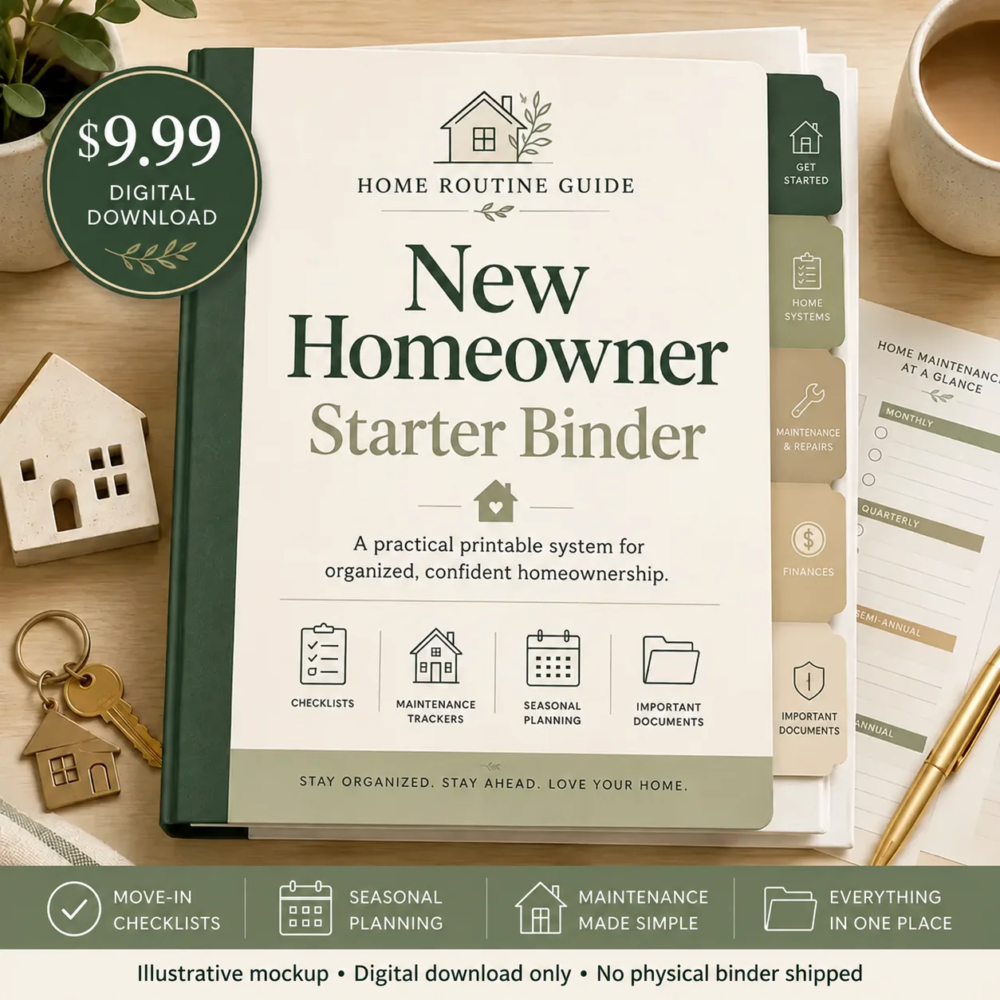

A newly purchased house can create a long list of projects. A first-month maintenance checklist keeps the order sensible: learn what matters in an emergency, document the major systems, notice visible maintenance needs, and create a schedule for what comes next.
Week 1: learn the essential controls
- Locate and label the main water shutoff.
- Locate the electrical panel and review the circuit labels.
- Confirm utility emergency contact information and procedures.
- Identify any property-specific controls you need to understand.
- Make sure household members know where important controls are located.
For the water shutoff specifically, use the main water shutoff guide and avoid forcing an old or uncertain valve.
Week 1: review basic safety devices
- Inventory smoke alarms and carbon-monoxide alarms.
- Follow manufacturer instructions for testing and replacement information.
- Locate fire extinguishers and review household exit plans.
- Record emergency contacts and household-specific needs.
The smoke and CO alarm guide provides a more detailed framework for inventory and recordkeeping.
Week 2: document major equipment
Photograph and record the information you will need later:
- HVAC equipment manufacturer, model, and serial numbers
- HVAC filter size and airflow direction
- Water heater information
- Major appliance model and serial numbers
- Known installation dates
- Warranty and service contact details
Week 2: make a visible-maintenance walk-through
Walk the house slowly and note conditions that deserve attention. Examples include visible plumbing leaks, signs of moisture, dirty filters, blocked drainage, damaged caulk, loose exterior components, or equipment areas that need cleaning or service.
A checklist can help you notice changes, but significant electrical, gas, structural, roofing, water, or other safety concerns deserve the appropriate utility, emergency service, manufacturer guidance, or qualified professional.
Week 3: organize records
Create a simple place for:
- Equipment and warranty information
- Contractor and service-provider contacts
- Repair and maintenance history
- Known future projects
- Recurring maintenance dates
See which home maintenance records are worth keeping and use a printable maintenance log for ongoing service history.
Week 4: create the repeatable routine
Choose one day each month for a short walk-through. Review alarms, visible plumbing, HVAC filters, equipment areas, drainage, and your maintenance notes. Then add seasonal or manufacturer-specific tasks that apply to your actual property.
The monthly home maintenance checklist gives you a repeatable starting point.
Free checklist or printable binder?
Use the free First 30 Days resources when you mainly need the immediate move-in sequence. A printable binder becomes more useful when you want the checklist plus reusable pages for emergency details, equipment, warranties, contractors, maintenance notes, and seasonal planning.

Ready-made option
New Homeowner Starter Binder
The 44-page guided system combines first-month priorities with home records, emergency information, equipment details, warranties, contractors, repair history, seasonal planning, budgeting, and future projects.
$19 one-time digital purchase.
Get the 44-Page Binder — $19No subscription required. Review the digital product terms and refund policy.